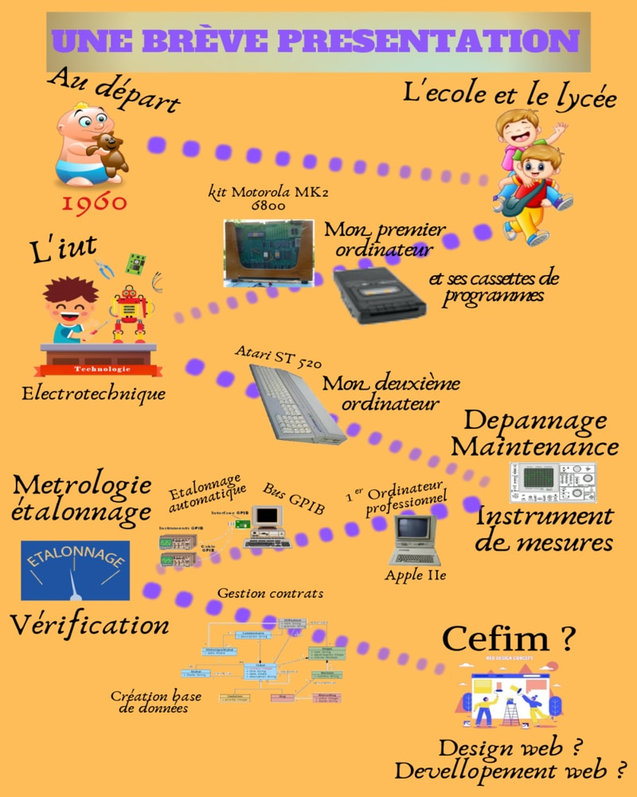

Accueil
Le Cv rituel
Réalisation
Lien interessant
Informatique
les cours de P.Giraud
Des cours de CSS
Le site Alsacréation
La fondation Mozilla
Jardinage
Le potager de did67
Le potager durable
Un jardin botanique
Le jardin des sortilèges
Menuiserie
Pour menuisier amateur
Astuces et outillages
Astuce en général
De beau outils
Autre
Une vie autrement
Maison façon escargot
Notre couple de pic vert
